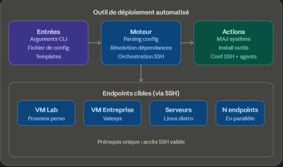

Outil de déploiement automatisé
Présentation
Avant de connaître Ansible, j'avais un problème concret : je gérais un grand nombre de machines virtuelles, aussi bien dans le cadre de mon alternance chez Valesys que dans mon lab personnel, et chaque nouvelle VM nécessitait une série de configurations initiales répétitives. Mise à jour du système, installation des utilitaires réseau, déploiement d'agents, configuration SSH... Des tâches identiques, réalisées à la main, encore et encore.
Plutôt que de chercher immédiatement une solution existante, j'ai fait le choix délibéré de construire mon propre outil. Non pas par méconnaissance d'Ansible, dont j'avais entendu parler, mais par volonté de comprendre de l'intérieur ce que ce type d'outil fait réellement. C'est cette démarche qui a donné naissance à ce projet.
Objectifs, contexte et enjeux
L'objectif était de disposer d'un outil léger, portable et flexible, capable de déployer automatiquement des configurations et des outils sur un ou plusieurs endpoints distants, en utilisant uniquement une connexion SSH comme prérequis.
L'enjeu était double. D'un côté, gagner du temps sur des tâches répétitives et réduire les erreurs humaines liées aux configurations manuelles. De l'autre, mieux comprendre les mécanismes sous-jacents à l'automatisation de déploiement, ce qui s'est révélé particulièrement formateur pour la suite.
Les étapes

Architecture de l'outil — entrées, moteur et endpoints cibles via SSH
La conception de l'outil a démarré par l'identification des besoins récurrents : quelles configurations revenaient systématiquement sur chaque nouvelle VM, quels outils devaient être présents par défaut, et quelles actions devaient rester optionnelles selon le contexte.
L'outil propose deux modes d'utilisation distincts. Le premier permet de cibler un endpoint unique directement en ligne de commande, avec des options passées en arguments pour définir ce qui doit être installé ou configuré. Le second accepte un fichier de configuration structuré, dans lequel on liste plusieurs endpoints avec, pour chacun, les outils à installer ou mettre à jour selon une syntaxe définie. L'outil lit ce fichier et déploie automatiquement l'ensemble, machine par machine, sans intervention manuelle.
L'architecture a été pensée pour être facilement extensible : ajouter un nouvel agent, un nouvel outil ou une nouvelle action ne nécessite pas de modifier le cœur du programme. Il suffit d'étendre les templates existants, ce qui rend l'outil adaptable à de nouveaux contextes sans repartir de zéro.
Le seul prérequis côté endpoint est un accès SSH valide. Pas d'agent à installer, pas de dépendance particulière sur les machines cibles.
Les acteurs
Ce projet a été développé seul, dans le cadre de mon alternance chez Valesys et de mon lab personnel. Il a été hébergé sur le GitLab interne de Valesys, auquel je n'ai plus accès aujourd'hui. Les utilisateurs directs étaient moi-même, dans les deux contextes.
Les résultats
L'outil a permis de réduire significativement le temps de mise en place des configurations initiales sur les VMs, aussi bien en entreprise que dans mon lab. Des tâches qui prenaient auparavant plusieurs dizaines de minutes par machine, répétées manuellement, sont devenues une affaire de quelques secondes une fois le fichier de configuration prêt.
Au-delà du gain de temps, ce projet m'a permis de comprendre concrètement ce que signifie concevoir un outil destiné à être réutilisé et modifié dans le temps. La contrainte d'extensibilité, que je m'étais fixée dès le départ, m'a obligé à réfléchir à la structure du code différemment de ce que je faisais habituellement.
Les lendemains du projet
Ce projet a marqué une étape importante dans mon parcours. Peu après l'avoir développé, j'ai commencé à travailler avec Ansible, puis avec GitLab CI et AWX pour l'orchestration. La compréhension que j'avais acquise en construisant mon propre outil m'a permis d'appréhender ces technologies bien plus rapidement que si je les avais découvertes sans ce bagage. Savoir ce qu'un outil fait de l'intérieur change profondément la façon dont on l'utilise.
Aujourd'hui, l'outil en lui-même n'est plus maintenu. Il a été remplacé par des solutions plus robustes et standardisées. Mais la démarche qui l'a fait naître, comprendre avant d'utiliser, reste une constante dans ma façon de travailler.
Regard critique
Ce projet illustre quelque chose que je défends : réinventer la roue a parfois beaucoup de valeur, à condition de le faire consciemment et dans un objectif d'apprentissage. Je ne recommande pas de reconstruire Ansible pour une utilisation en production. En revanche, construire un outil similaire à plus petite échelle pour en comprendre les mécanismes est un des exercices les plus formateurs que j'aie faits.
Si c'était à refaire, j'ajouterais dès le départ une gestion des erreurs plus robuste et un système de logs plus lisible. Ce sont les deux points qui ont montré leurs limites lorsque l'outil a commencé à être utilisé sur un nombre croissant de machines simultanément.